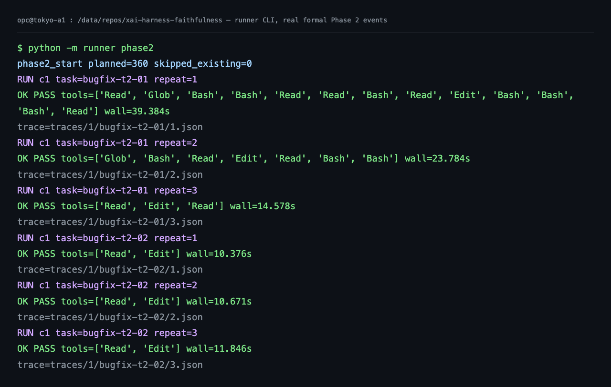

xAI 期末專題 · 陳政顯 7114029018 · 2026
Faithfulness of the Harness
歸因 Agent 的工具選擇分歧。同一個模型、同一個任務，只換 harness，工具路徑就不一樣——這差異是誰造成的？
背景與動機
大家比的是成功率，但成功率藏不住分歧。
LLM Agent 都靠 harness（Claude Code、Codex CLI、OpenCode、Hermes）在跑。固定模型、只換 harness，工具序列就分岔。黑箱跑分看不出「為什麼」，也就無從信任、重現與治理。
研究問題
四個問題，貫穿全場。
RQ1方法一致性
四種白箱方法對同一決策點的歸因是否一致？不一致的比例與 pattern？
RQ2分歧與失敗
高分歧是否與任務失敗正相關？能否當成 governance trigger？
RQ3效應分解
harness 主效應、model 主效應、交互作用各解釋多少 tool 選擇差異？
RQ4治理卡片
能否轉成 agent-card：fidelity / stability / robustness / actionability / governability？
方法
固定任務、變動 harness/model、白箱拆解。
4 harness × 2 模型 × 6 config × 20 task × 3 重複 = 360 條正規化 trace；全程版本釘死，先 pilot 驗管線再放大全量。
方法取捨
從「只看成功率」到「拆開歸因」。
黑箱跑分
只知道成功或失敗。
同樣 PASS，工具路徑可能完全不同；黑箱答不出分歧從哪來，也無法指向修正點。
白箱 M1–M4
把分歧拆開、可稽核。
沿 system prompt / tool 定義 / 行為 counterfactual / planning-loop 四層歸因，並標清楚每種證據的邊界。
設計取捨
每個選擇都有理由，不是隨便定的。
只用 formal repeats 1–3
避免 pilot 與 counterfactual 資料污染 baseline 統計。
受控與 benchmark 分流
兩者出處與難度不同，混在一起會誤導結論。
OpenCode/Hermes 當交互格
Claude Code、Codex 是錨點；交互作用只用交叉格估計。
可重現性
比較有意義的前提：條件一致。
版本 / 模型 snapshot / provider route / reasoning effort 全釘死；Claude Code 固定 max_tokens=64000、thinking=63999、200k context；raw log 留 git 外、sanitized trace 進 git。
實驗設計
6 格怎麼擺，才能分離 harness 與 model 效應。
同一模型在不同 harness 走同一 provider route；OpenCode/Hermes 是交叉格（估交互），Claude Code/Codex 是單模型錨點。
任務
20 題、5 類各 4、可自動評分。
Tier 1 benchmark 錨點（Aider / Exercism 純 Python）+ Tier 2 受控題（DeepSWE 風格）；難度校準避免「全失敗、無分歧訊號」。
紀錄方法
四種 harness，一種可比的 trace。
正規化 JSON：有序 tool 序列、outcome、replay refs；hidden chain-of-thought 不入庫，只留可見的 tool 路徑與 metadata。
歸因方法
四種白箱方法，各看一層。
M1 system prompt、M2 tool affordance（source-derived 邊界）；M3 直接 counterfactual 執行；M4 planning-loop trace。每法都標清楚證據邊界。
執行實況
不是紙上談兵：它真的在跑、trace 真的被擷取。

runner CLI — 真實 formal Phase 2 事件流
 claude-trace — 真實 system prompt 與 tool 序列
claude-trace — 真實 system prompt 與 tool 序列
真截圖、已去敏（無 API key / PII）。system prompt 為刻意展示的 xAI 證據。
360traces
條 formal trace（6 config × 20 task × 3 重複）。整體成功率 81.9%。
先分流
受控題與 benchmark 題分開看。
受控 92.7%、benchmark 38.9%。把 benchmark 的低成功率混進受控結論會嚴重誤導。
RQ3 · 分歧有多大
工具集合的重疊度：Jaccard 矩陣。
跨 config 的 tool-family Jaccard 相似度（對角線=自身）。值越低代表工具集合分歧越大。
RQ3 · 誰造成的
harness、model、交互各貢獻多少。
描述性對比；Claude Code/Codex 是錨點、未完全交叉，因此交互估計只用 OpenCode/Hermes 交叉格，不做因果過度宣稱。
RQ2 · 分歧重要嗎
工具分歧與任務成敗，幾乎無關。
Pearson r ≈ 0.003（n=300）。這是發現，不是「沒有風險」的證明——目前資料下，不能單用分歧當 governance trigger。
RQ1 · 四法一致嗎
同一決策點，四種方法看法。
全員一致 10/20（50%）；標籤分布 harness 6 / 交互 8 / model 6。選樣為高分歧子集，非全體普遍率。
RQ4 · 濃縮成卡片
每個 harness 的五維治理卡。
fidelity / stability / robustness / actionability / governability，為本受控 suite 的描述性 proxy，非外部穩健性宣稱。
具體案例
把「分歧 → 歸因 → 卡片」串成一條。
一個真實 decision point 的左右對照（含 M3 修改前後），讓抽象的歸因變成可檢視的具體證據。
所以呢
歸因不是終點。
每個 xAI 發現，對應到具體的 prompt / tool-surface 治理行動與 agent-card 註記。
限制與非過度宣稱
先誠實劃清界線。
只支持這 20 題 suite
純 Python 受控題，不外推到所有 coding-agent 工作；benchmark 與受控分開呈現。
小模型 + 子集偏誤
兩模型偏小、有難度天花板；M1–M4 跑在高分歧子集，非普遍率估計。
M1/M2 為 source-derived
閉源/原生 harness 可 patch 程度不同，不宣稱所有 harness 都做了 uniform runtime ablation。
未來展望
下一步怎麼補。
跨語言、大型 repo
把 suite 推到非 Python、多框架、長 horizon，檢驗結論穩健性。
新版 harness 重跑
釘死舊版未含新機制（如 /goal）；在新版上重跑驗證歸因是否穩定。
下游使用者研究
本 trace 資料庫作為後續 HCI 歸因使用者研究的 ground truth。
收束
換個 harness，路徑就不同——而我們能說清楚為什麼。
白箱歸因把分歧拆成 harness／model／交互，並濃縮成一張可檢查的 agent-card。
1 / 24
← / → · 捲動 · 滑動